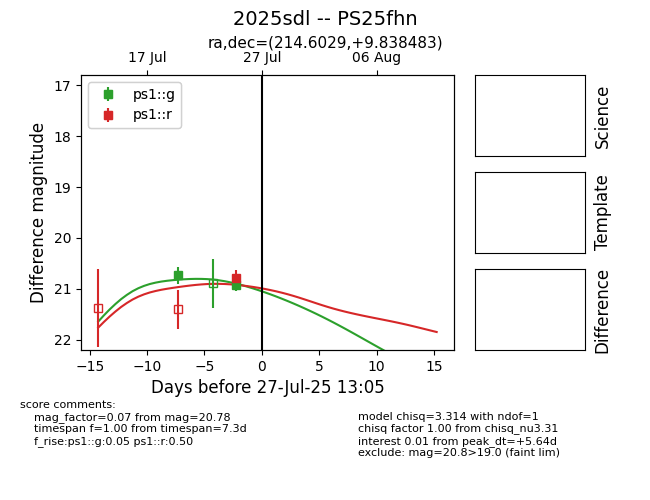

Target 2025sdl at 2025-07-27 13:05, see:
TNS: wis-tns.org/object/2025sdl
YSE: ziggy.ucolick.org/yse/transient_detail/2025sdl
alt names
2025sdl (yse,tns)
PS25fhn (panstarrs)
coordinates:
equatorial (ra, dec) = (214.6029,+9.83848)
galactic (l, b) = (356.9268,+63.17952)
photometry
last ps1::g=20.93, ps1::r=20.78
2 ps1::g, 1 ps1::r detections
